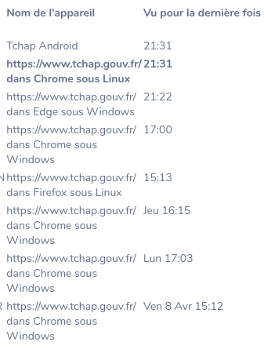
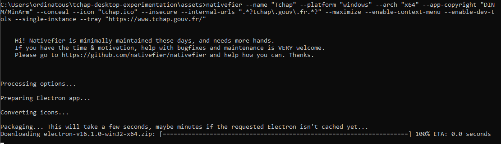

Geekerie encore et toujours
Branlette technique , m’a-t-on dit un jour .
Mais cette “branlette technique” m’amène à comprendre comment , on “créé” une appli “installable”.
Mais ce n’est pas encore le sujet . et en vrai , on créé rien.
Par geekerie , j’ai voulu tester la méthode proposé , et le résultat m’a un peu interpellé .
Tchap sous windows 11
Voir le précédent article: ça a fonctionné direct , mais rapidement , le “client” Tchap moulinait quand il fallait quand il demandait des vérifications.
Voici la liste des appareils sur lesquels je test Tchap.
Je vous laisse soigneusement lire , le nom des systèmes, et des navigateurs.
- Android, c’est mon téléphone: pas de galère.
- Chrome , ce sont les appli “compilées”
- Edge , c’est ma machine de base sous Windows 11 en mode web
- Firefox linux , c’est ma machine perso
- On voit l’heure de vérification

Bref , ça marche , d’ailleurs j’utilise ma version linux sur ma machine perso , pour etre certains de casser les couilles à mes collègues pendant mes vacances.
Ca marche les gars : markdown inside ..
Revenons à nos moutons.
Tchap sous debian 11
J’utilise NodeJS depuis longtemps , en gros c’est un générateur de site web: il pisse du html .
Il digére , ton “code” avec le CSS , et te pisse ton site web dans un dossier public . Pour faire trés simple . Bref.
L’installe
Je me suis fait chier avec ma machine virtuelle (windows 10) , avant de comprendre que le bridge n’était pas sur la bonne carte réseau.
sudo virsh net-edit network tchap
sudo virsh net-edit tchap
Là je cherchais , mais j’avais autre choses à foutre au boulot. L’objectif n’était pas de s’authentifier sur chap , avec une machine win 10 virtualisée.
Mais Débian 11.
Les prérequis
Installez le , il sera dans votre PATH
NodeJS dispose d’un gestionnaire de package , nommé NPM, utilisez le pour pour installer yarn
sudo npm install --global yarn
Puis installez nativifier
yarn global add nativefier
Faites un git clone du projet.
git clone https://github.com/tchapgouv/tchap-desktop-experimentation.git
Ensuite , contrairement au README ne vous déplacez pas dans assets, sinon ça va vous créer le dossier dans assets.
Tapez simplement cette commande :
sudo nativefier --name "Tchap" --platform "linux" --arch "x64" --app-copyright "DINUM/MinArm" --conceal --icon "/home/$user/tchap-desktop-experimentation/assets/tchap-logo.png" --insecure --internal-urls ".*?tchap\.gouv\.fr.*?" --maximize --enable-context-menu --enable-dev-tools --single-instance --tray "https://www.tchap.gouv.fr/"

Ce travail est sous licence Attribution-NonCommercial 4.0
International.